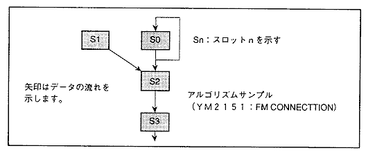
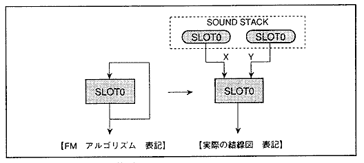
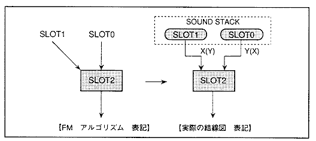
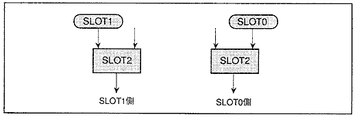
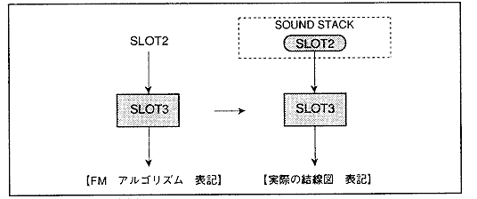

実際にＦＭ音声合成を実現するにあたって、注意事項を記述しておきます。
図4.26 スロットの平均化演算
┏━━━━━━━━━━━━━━━━━━━━━━━━━━━━━━━━━━━━━━━━━━┓
┃スロットの入出力 変調入力 ┃
┃ ┃
┃ Ｘ Ｙ・・・変調入力 Ｘ Ｙ ┃
┃ ↓ ↓ ↓ ↓ ┃
┃ ┌─┴───┴─┐ ┌─┴────┴─┐ Ｘ ＋ Ｙ ┃
┃ │ スロット │ │ 平均化演算部 │ ＝ ─────── ┃
┃ └───┬───┘ └────┬───┘ ２ ┃
┃ ↓ ↓ ┃
┃ 波形データ出力 ＡＤＤＲＥＳＳ ┃
┃ ＰＯＩＮＴＥＲへ ┃
┗━━━━━━━━━━━━━━━━━━━━━━━━━━━━━━━━━━━━━━━━━━┛
スロットに入力するソースは、サウンドスタック("SOUS")中のデータです。従って、あるスロットで変調するということは、変調スロットに対応するサウンドスタックを、被変調スロットにアサインおよび接続を行うことを表します。
実際の機能としては、変調入力YおよびXに対して入力するサウンドスタックを選択する"MDXSL"および"MDYXL"があるので、このレジスタに先に説明した演算法で求めたパラメータを、設定する必要があります。
また、スロットへの変調入力はXおよびYの２本があります。この２本の入力は、平均化演算によって1／2倍にされてしまうことに注意してください。従ってスロットの入力が１本で接続されている場合は、XおよびYの入力に同じパラメータを設定して、
同じスロットのサウンドスタックデータを入力するようにしてください。片側入力のみの設定にしますと、考えてもいないデータが混入したり、ＦＭの変調度が小さく感じられたりすることがあります。
次に"MDXSL"および"MDYSL"の算出法を用いて、実際にＦＭ音声合成で使われる4スロット構成のＦＭ音源を例として、各パラメータを求めていきます。
初めに、図4.27に示したＦＭ音声合成のアルゴリズムの読み取り方について説明します。
図4.27 4スロット構成のアルゴリズム

●スロット0
スロット0は、出力をスロット2の入力に用いていますが、一方でスロット0の出力をスロット0の入力に用いています。これをセルフフィードバックといいます。
●スロット1
スロット1は、出力をスロット2の入力として用いています。
●スロット2
スロット2は、スロット0およびスロット1の出力を入力として用いています。その出力をスロット3の入力に用いています。
●スロット3
スロット3は、スロット2の出力を入力としています。スロット3の出力は何も接続されていませんが、これを音声出力として使用します。
(1)スロット0に設定するパラメータ
図4.28 スロット0のアルゴリズム

スロット0のようなセルフフィードバック型の構成は、スロット0の出力データが格納されたサウンドスタックを変調入力のXおよびYに接続することが必要です。
サウンドスタックには現在演算中のサンプルに対して、最新サンプルおよび過去サンプルがあるので、変調入力XおよびYには、両方に最新サンプルまたは過去サンプル、あるいは片方に最新サンプルもう片方に過去サンプルを入力するというように、
３通りの入力方法が考えられます。
※注意
ただし、セルフフィードバックの場合には、同じサンプルを入力すると発振する可能性があるので、片方に最新サンプル、もう片方に過去サンプルを入力するという方法をとるようにしてください。
MDXSLおよびMDYSLの値は、変調をかけるスロット、変調をかけられるスロットは共に０なので、4.1式に代入すると以下のようになります。
０ − ０ ＝ ０
これは4.1式の条件３を満たすので、MDXSLおよびMDYSLのMSBは、
最新サンプルの時 MSB=１(100000)Ｂ ＝２０Ｈ
過去サンプルの時 MSB=０(000000)Ｂ ＝００Ｈ
となります。
(2)スロット２に設定するパラメータ
図4.29 スロット2アルゴリズム

スロット２は複数スロットの入力であるため、最新サンプル、過去サンプル入力にこだわる必要はありません。
スロット１を入力(スロット1側)とした"MDXSL"および"MDYSL"の値は、変調をかけるスロットが１、変調をかけられるスロットは２なので、4.1式に代入すると以下のようになります。
１ − ２ ＝ −１
これは4.1式の条件２を満たすので、"MDXSL"および"MDYSL"のMSBは、
３２ ＋ (−１) ＝ ３１ ＝ １ＦＨ ＝ (011111)Ｂ
最新サンプルの時 MSB=0 (011111)Ｂ ＝ １ＦＨ
過去サンプルの時 MSB=1 (111111)Ｂ ＝ ３ＦＨ
となります。
図4.30 スロット2アルゴリズム(入力スロット別)

次に、スロット０を入力(スロット0側)とした"MDXSL"および"MDYSL"の値は、変調をかけるスロットが０、変調をかけられるスロットは２なので、4.1式に代入すると以下のようになります。
０ − ２ ＝ −２
これは4.1式の条件２を満たすので、"MDXSL"および"MDYSL"のMSBは、
３２ ＋ (−２) ＝ ３０ ＝ １ＥＨ ＝ (011111)Ｂ
最新サンプルの時 MSB=0 (011110)Ｂ＝ １ＥＨ
過去サンプルの時 MSB=1 (111110)Ｂ＝ ３ＥＨ
となります。
※注意
基本的に、番号の異なるスロットを入力する時は、同じ世代のサンプルを入力してください。従来のＦＭ音源はこの方式をとっていますので、ＦＭ音源の音色ライブラリーを移植する場合には、この方法をとってください。
(3)スロット３に設定するパラメータ
図4.31 スロット3アルゴリズム

スロット３は入力が１つしかないため、スロット2の出力を変調入力XおよびYの両方に入力する必要があります。
接続されているスロットが異なっていれば発振の可能性はないので、変調入力XおよびY両方に最新サンプルのみ、または過去サンプルのみ、あるいは片方に最新サンプル、もう片方に過去サンプルを入力しても構いません。
従来のＦＭ音源の音色ライブラリーを移植する場合には、どちらか一方のサンプルだけを使用してください。
スロット２を入力としたMDXSLおよびMDYSLの値は、変調をかけるスロットが２、変調をかけられるスロットは３なので、4.1式に代入すると以下のようになります。
２ − ３ ＝ −１
これは4.1式の条件２を満たすので、"MDXSL"および"MDYSL"のMSBは、
３２ ＋ (−１) ＝ ３１ ＝ １ＦＨ>＝ (011111)Ｂ
最新サンプルの時 MSB=0 (011111)Ｂ＝ １ＦＨ
過去サンプルの時 MSB=1 (111111)Ｂ＝ ３ＦＨ
となります。